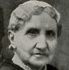
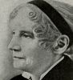
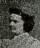

Collective Biographies of WomenAn Annotated Bibliography
Alison Booth
862.
Whiting, Lilian. Women Who Have Ennobled Life. Philadelphia: Sunday-School Union, 1915.
See How To Make It as a Woman, 7-9.
Search OCLC WorldCat for this title.
Search Google Books for this title.
Whiting, Lilian. Women Who Have Ennobled Life. Philadelphia: Sunday-School Union, 1915.
See How To Make It as a Woman, 7-9.
TOC: Elizabeth Barrett Browning; Mary Ashton Livermore; Louisa May Alcott; Margaret Ossoli Fuller; Mary Lyon; Harriet Beecher Stowe; Frances E. Willard; Harriet Goodhue Hosmer; Julia Ward Howe. .
-
Julia Ward Howe
-
Elizabeth Barrett Browning
-
Mrs. Mary A. Livermore
-
Louisa May Alcott
-
Margaret Fuller d'Ossoli
-
Mary Lyon
-
Harriet Beecher Stowe
-
Frances Elizabeth Willard
-
Lady Henry Somerset
-
Harriet Hosmer
-
Beatrice Cenci
-
Julia Ward Howe
-
Florence Nightingale
Search OCLC WorldCat for this title.
Search Google Books for this title.